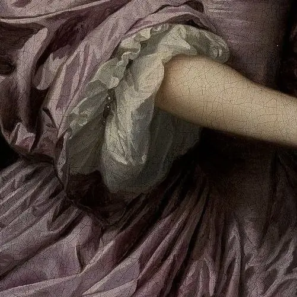

لباس ارغوانی
قسمت ۱۱
زنی با بدنی زیبا در حالی که رانهای پایش از تمیزی نور مهتاب را بازتاب میکرد از سمت دیگر پالتویی از جنس خز قرمز تیرهای بر روی دوشش انداخته بود. مشخص بود که سرما او را اذیت میکرد، اما سرما را به هوای ملاقات کسی تحمل میکرد. دوستانش با آرایش و پوششی همانند او در فاصلههای متعددی ایستاده بودند. تنها یکی از آنها با سیگاری در گوشهای ایستاده بود و هر کسی که به اون میخواست نزدیک شود را پس میزد. مدام سر مردها داد میزد که در حال سیگار کشیدن است و موقع سیگار کشیدن نمیخواهد کار کند. ساعت از نیمهشب داشت میگذشت. شب دخترها تقریبا ۲ ساعتی میشد که شروع شده بود. در همین حین یکی از آنها مردی را دید و گفت: اوه.... چه مرد با شخصیتی! دلت میاد با تیپ و ظاهر چنین بدن جذابی رو خونه نبری؟
سپس زن خز روی سینههای خودش را به نمایش مرد درآورد تا از بالا یک دیدی به آنها بیندازد.
مرد خودش را حسابی پوشانده بود. در تعجب بود که چگونه این زنها اینگونه در برابر سرما مقاوم هستند. مرد هر گامی که به سوی زن برمیداشت ابعاد و پوشش بیشتر مشخص میشد تا اینکه به زیر نور چراغ رسید و به زن گفت: «خب چقدر میگیری؟»
زن با صدایی که در آن صدای رضایت شنیده میشد خز را دوباره بر روی بدن خود انداخت و در جواب گفت: «برای یک اجرای درست حسابی ۲۰ شیلینگ میگیرم.»
همچنان لبخند غرور بر روی لبان زن بود. نمیشد فهمید که این لبخند از سر این بود که توانسته بود مردی را به تور خود دربیاورد و یا اینکه توانسته بود از دست این سرما فرار کند و از دوستان خود جدا شود. مرد خواست در در جیب خود کند که پول را به زن بدهد اما زن پول مرد را در آن لحظه قبول نکرد و با دستانش دست مرد را به سوی کیفپول مرد هول داد. سپس گفت:«هزینه رو بعد از انجام کارم میگیرم.»
مرد بدون آنکه حرفی بزند تنها با حرکت سری به زن فهماند که او را دنبال کند. مرد با قدمهایی شمرده که حاکی از احتیاط بود او بود که نمیخواست ناگهانی لیز بخورد. زن نیز پشت سر او در حال آمدن بود. سه گام با مرد فاصله داشت. نمیخواست کنارش بایستد. در طول ده دقیقه پیادهروی این زوج هیچ حرفی بینشان رد و بدل نشد. سپس مرد کلید را در قفل انداخت و به سوی داخل روانه شد. زن ابتدا در بیرون چهارچوب به داخل خانه نگاه میکرد. مانند موشی شده بود که میخواست از نبودن هر تلهی موش و گربهای مطمئن شود. سپس تا خواست گامی به داخل بردارد، مرد در حالی که کلاه و شالش را باز کرده بود به سوی زن بازگشت و از زن تقاضا کرد که کفشهایش را دربیاورد. زن با احتیاط کفشهایش را درآورد. در همین حین مرد لباسهای گرمش را با لباسهای خانه تعویض کرد و به سوی زن رفت حال میشد تفاوت قد ۲۰ سانتیمتریشان را فهمید. مرد دستانش را به سوی زن دراز کرد و گفت: «من هنری هستم. جان هنری. البته همه دوستام من رو جان صدا میکنن.»
زن مدام هی به دستان و لبخند روی صورت نگاه عوض میکرد. احساس میکرد اتفاقی عجیب در حال رخ دادن است. جان بعد از ثانیهای مکث از سوی زن پرسید:«مشکلی پیش اومده خانم...؟» زن لنگه دوم کفشش را با زحمت در آورد و با لحنی پر از تعجب پرسید:«تو حالت خوبه؟»
جان دستانش را جمع کرد و گفت:«اوه... بله خوبم ممنون. من فقط هنوز اسمتون رو نمیدونم.» زن گفت:«من شالی هستم. تو میدونی چرا من اینجام دیگه، درسته؟»
جان دوباره به سوی مبل حرکت کرد و در حالی که مینشست و صدای خستگی مبل را به بیرون فرا میخواند گفت:«خب آره گفتی که برای یک اجرای قراره ۲۰ شیلینگ بگیری. من آوردمت اینجا که خونه رو یه دستی روش بکشی.»
زن خز را از روی خودش کنار زد و یک دستش را بر روی پهلویش گذاشت و دهنش از تعجب باز شده بود و میدید که چگونه جان بر روی مبل در حال انتخاب کتاب است. آخر سر بدون آنکه حرفی به جان بزند لباسهای گرمش را بر روی آویزی قرار داد و گفت:«اوکی... (پسره خل) فقط کجا کثیفه؟»
جان جواب داد:«جایی کثیف نیست فقط یکم نامرتبه.»
شالی بدون گفتن حرف اضافهای اول به سوی آشپزخانه رفت. آشپزخانه تمیز بود ولی با این حال هر چیزی را میشد در آن پیدا کرد. بعد از گذشت نیم ساعت جان در حالی که مشغول کتاب بود رو به شالی کرد و گفت:«میدونی من یه دوستی به نام هانس دارم که از زمانی که یه دختر رو پیدا کرده دیگه فرصت نمیکنیم که با هم وقت بگذرونیم. با اینکه چند باری من رو دعوت کردن، چند دفعش رو رد کردم چون احساس میکنم که اینطوری بیشتر با هم میتونن وقت بگذرونن. من از اینکه این دوتا کنار هم خوشحال باشن بیشتر از این شاد میشم که بخوام با هانس حرف بزنم.»
شالی در حالی که یک سری ظروف را برای شستشو مجدد کنار میگذاشت سرش را از بیحوصلگی رو به جان چرخاند و گفت:«خب اینا به من چه؟ اگه دنبال یک کسی میگردی که مغزش رو پر از این شر و ورها بکنی برو یه سگ بگیر.» جان از جایش بلند شد و سمت شالی رفت و در صورتش لبخندی نمیشد شناسایی کرد. شالی سایه سرد جان را از دور بر تنش احساس میکرد و نگاه به لکنت به جان گفت:«ال...ال...البته به... منم... آره منم... مییییی...میتونی بگی.» جان به نزدیک شالی رسید گفت:«من خودم از کتاب سفید برفی واقعا خوشم نمییاد با این حال جزو کتابهایی هست که به بقیه معرفی میکنم. این کتاب همش پر از اعتمادهای بیجا به آدمهاست. جالبیش این هست که این رو هیچ کسی درست نمیفهمه. نمیدونم چرا واقعا متوجه نمیشن که این داستان تنها میخواد یاد بده که نباید به هر کسی همینجوری اعتماد کرد. ولی آخرش چی میشه؟ همه میگه سفید برفی با پرنسس ازدواج کرد.» صدای جان بلند شده بود... عصبی بود... انگار میخواست سفید برفی را از کتاب بیرون بکشد و بخاطر کارهاش تنبیه کند. سپس لحظهای لرزش چشمان شالی را دید. متوجه تن صدایش شد. اینکه چگونه خود را به شکل تهدید نشان داده. پس گامی به عقب برداشت و از شالی معذرتخواهی کرد. تقریبا به مدت بیست دقیقه هیچ حرفی بینشان رد و بدل نشد تا این که شالی سکوت را شکست و بدون هیچ مقدمهای گفت:«خب فقط دوستای من رو به اسم اصلیم صدا میکنن. تو هم از الان میتونی من رو شارلوت صدا کنی... درضمن احساس میکنم تو آدم بدی نیستی فقط یکم تنهایی.»
جان در حالی که کتابها را داخل کتابخانه مرتب میکرد به سوی شارلوت برگشت و گفت:«شاید حق با تو باشه و من آدم بدی نباشم ولی قطعا آدم خودخواهی هستم.» سپس به سوی اتاق خواب راه افتاد و بعد از چند دقیقه به سوی شارلوت در پذیرایی بازگشت. در مسیر بازگشت به پذیرایی جان نگاهی به جایی انداخت که بالاخره میشد اسمش را آشپزخانه گذاشت سپس رو به شارلوت کرد و گفت:«خب من یکسری لباس زنانه داخل اتاق داشتم... برای دوستدختر سابقم بوده. امیدوارم که سایزت باشه. میخوای برو توی اتاق لباست رو عوض کن. شارلوت به تنوع رنگی و آن همه لباسی که در دست جان بود نگاه میکرد. از بس لباسها برایش جذاب بود که در آخر فهمید تنها یک شلوار راحتی در دست جان مانده و تمام پوشاک را در دستان خودش نگه داشته. سپس با لبخندی حاکی از رضایت با گامهایی که حالت پرش گونه داشت به سوی اتاق خواب رفت و در را پشت سر خود بست. بعد از گذشت زمانی درب اتاق بالاخره باز شد. شارلوت با لباسی ارغوانی بیرون آمد. لباس به گونه بر بدنش نشسته بود که گویا این لباس از ابتدا برای او دوخته شده بود. جان مشغول پهن کردن جای خوابی بر روی مبل بود و سپس یه نگاه به شارلوت انداخت. نمیتوانست چشم از لباس بردارد. دیده بود که ژوزفین این لباس را بر تن بکند اما هیچ وقت کسی را ندیده بود که این چنین لباس بر تنش برازنده باشد. شارلوت جان را دید که چگونه به او نگاه میاندازد، همین کافی بود که خندهی ریزی بکند و سپس با لباسش دور خودش چرخی زد تا جان لباس را از تمام جهات ببیند. گویی رفتار میکرد که انگار سالیانی همدیگر را میشناختند. جان به واسطه ناقوس ساعت از حالت خود درآمد. سپس گفت:«بنظرم این لباس رو برای خودت نگهدار. این لباس واقعا برازندهی خودته.» شارلوت صورتش سرخ شد. تا خواست حرفی بزند جان به او گفت:«خب کار برای امروز کافیه... تو روی تخت بخواب من اینجا رو مبل میخوابم. شب خوش.» سپس بدون هیچ حرف اضافهای بر روی مبل دراز کشید و پتویی روی خود کشید. شارلوت در تعجب بود. تا به حال چنین تجربهای نداشته بود. نمیدانست چه کند پس فقط به پیرو حرف جان به سوی اتاق رفت که بخوابد.